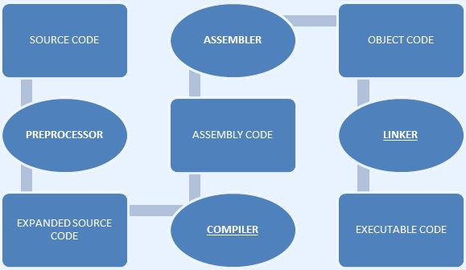

What is Compilation?
Compilation is the process where source code is coverted into machine code or object code by machine.
The compiler checks whether the program is error free or not.
If the program is errorless then it is converted into object code

This process of compilation includes various steps:
- Preprocessor: The file is given an extension of .c and the preprocessor expands the code.
For eg: the staement '#include<stdio.h>;' is the header file which already includes certain block of code is expanded by preprocessor and include in the subject code file.
- Compiler: It converts the preprocessed code into assembly code
- Assembler: The assembly code is converted into object code by using an assembler.
- Linker: There are some functions and keywords that are already stored in C library. The linker combines these functions with our program.
Or simply we can say that the linker combines the object code of our files with the object code of functions in c library. Here the file is converted into executable code.
